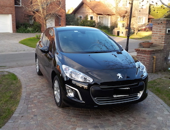
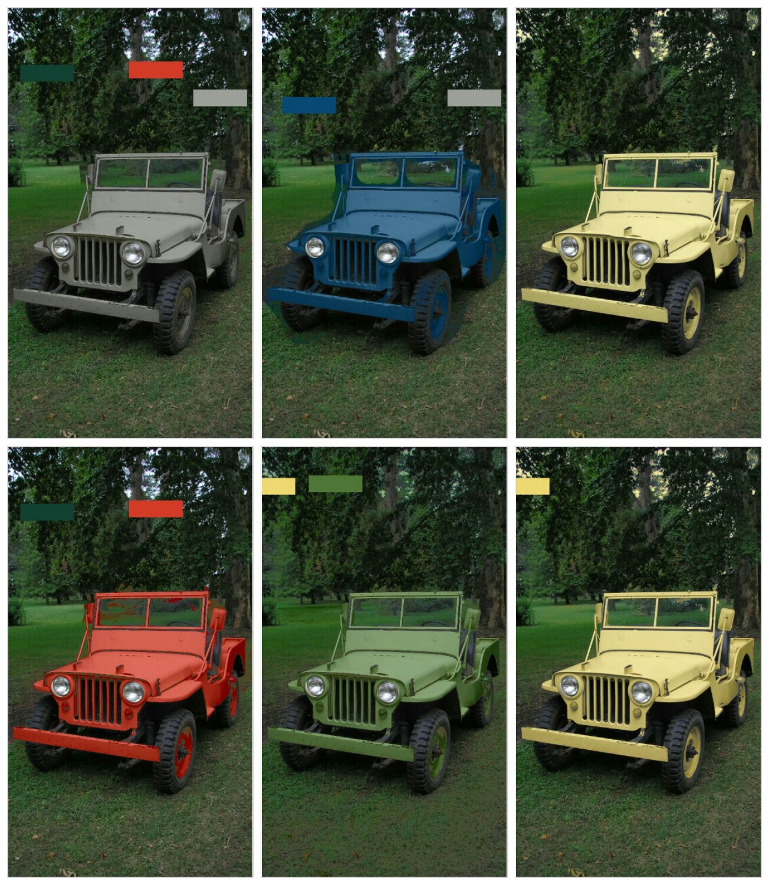

PEUGEOT - 308 - 1.6 ACTIVE


MECANICA: Se mantienen las cuatro motorizaciones conocidas hasta ahora: 1.6 16v naftera de 115 cv y 153 Nm; 2.0 16v naftera de 143 cv y 198 Nm; 1.6 16v THP (turbo naftero, ahora homolgado con normativa Euro 6) con 163 cv y 240 Nm; y 1.6 8v HDi (turbodiesel) de 115 cv y 240 Nm. Los 1.6 16v y 2.0 16v vienen solo con caja manual de cinco velocidades. Los 1.6 HDi y 1.6 THP se combinan con una nueva caja manual de seis velocidades. El 1.6 THP es el único que puede equipar en opción la caja automatica Tiptronic de seis velocidades, que ahora viene con dos modos de programacion: Sport (deportiva) y Eco (economica). Traccion delantera.
Sector de comentarios